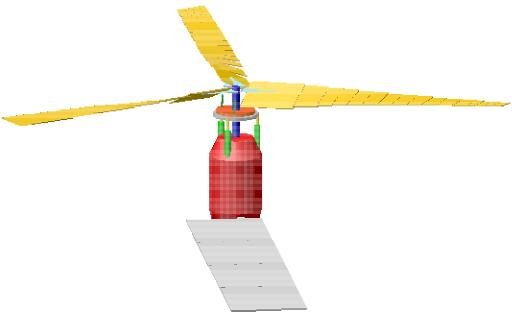

Google Summer of Code 2015 wrap-up: MBDyn
This Google Summer of Code (GSoC) wrap up comes from Louis Gagnon and Pierangelo Masarati, from MBDyn. It is a general purpose multibody dynamics software which allows modeling the physical response of a variety of mechanisms ranging from a helicopter to a human body.

MBDyn features the integrated multidisciplinary simulation of multibody, multiphysics systems, including nonlinear mechanics of rigid and flexible bodies (geometrically exact & composite-ready beam and shell finite elements, component mode synthesis elements, lumped elements) subjected to kinematic constraints, along with smart materials, electric networks, active control, hydraulic networks, and essential fixed-wing and rotorcraft aerodynamics.Some example MBDyn projects can be found here: https://www.mbdyn.org/?Documentation___Official_Documentation___Examples
We participated in Google Summer of Code (GSoC) for the first time in 2015 and were lucky enough to have more than a dozen proposals. Google then allowed us to select students for three projects , which we had initially proposed for the GSoC 2015.
- implementation collision detection and contact handling based on Bullet (http://bulletphysics.org/);
- enhancement and optimization of MBDyn internal libraries;
- revamping of the Blender (http://www.blender.org/) interface to MBDyn to better meet the scientific user's expectations;
Project 1: (collision detection), after mid-term evaluation, seems to be now on the right track. The skeleton of a module, implementing a user-defined element, is now available. It is being filled with the capability to deal with several basic shapes and place them according to the kinematics of MBDyn's nodes. Unfortunately, the student involved with this project had to retreat from the summer of code and the project thus remains incomplete.
Project 2: (internal enhancements) has successfully led to the implementation of an expression evaluator for mathematical expressions. It is expected to improve the performance of "string" drive callers evaluation. The prototype passes all unit tests designed so far. The next steps will be: use it in string drive callers; optimize it (several aspects already outlined); benchmark it with respect to original code.
Project 3: (Blender-based GUI) sadly didn't pass mid-term evaluation, so was pulled out of GSoC. However, thanks to the revitalized interest and the invaluable collaboration of several people, including Doug Baldwin (the original developer of the tool), Louis Gagnon and Andrea Zanoni, the existing tool has been significantly improved. A "Blender and MBDyn" working prototype is already available on Github:
https://github.com/gdbaldw/BlenderAndMBDyn/archive/master.zip
We want to thank everyone who contributed to this effort, starting from the selected students.
by Louis Gagnon and Pierangelo Masarati, Polytechnic University of Milan